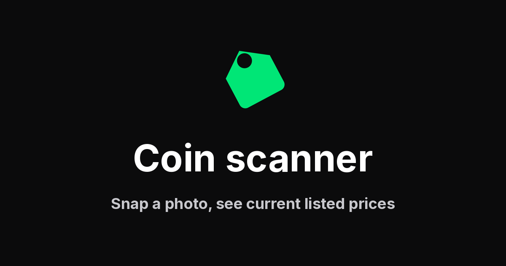

A coin scanner is built for a different job than a date rumour or a melted-silver average. People often look at a date they have heard is rare, or they weigh a handful of old change and treat every coin as if it were worth the same. A useful scanner identifies the coin in front of you from a photo, then shows three numbers that can come apart: face value, metal value, and collector premium.
If you want a useful coin scanner, identify yours from a photo. That is what  How Much Is It Worth: Scanner is built to do.
How Much Is It Worth: Scanner is built to do.
A photo scanner is useful because the details that move the market are small, and they are on the coin. The date and mint mark decide whether you have a common coin or a scarcer one. Mint marks include P, D, S, and W, and older US coins can also carry CC or O. On a Lincoln cent, the mark is on the front, under the date, and no mark usually means Philadelphia. On a Jefferson nickel, the mark is on the back, to the right of Monticello, from 1938 to 1964, then on the front under the date from 1968. War nickels from 1942 to 1945 have a large mint mark above the dome. On a Roosevelt dime, the mark is on the back, left of the torch, from 1946 to 1964, then on the front above the date from 1968. On a Washington quarter, it is under the eagle from 1932 to 1964, then on the front, right of the ponytail, from 1968. On a Kennedy half dollar, it is on the back, left of the eagle's tail, in 1964, then on the front above the date from 1968. On a Morgan dollar, it is on the back, under the wreath, above DO in DOLLAR. If the mark is unreadable, say so rather than guess a valuable one.
This is a guide to using a scanner on the coin in your hand. It is not a rewrite of a single-date guide, and it is not a melt-table reprint. We will not invent a date-by-date chart, and we will not copy a dated snapshot figure as if it were current.
Photograph both sides in soft light, plus a third close-up of the date and mint mark if they are hard to read. Take or upload up to three photos. The app shows the identification first: the country, denomination, year, and mint mark. Confirm or edit those details before any price lookup. Then you see an estimated sale figure as well as a Worth about number, a listed range from current listings, a confidence level, and the listings themselves when there are enough of them. For silver and gold coins, a live metal price is used as a floor. Coin and banknote identification uses Numista. If the data is thin, the result is labelled as a rough estimate. The product will not invent a precise figure, and it is not a certified appraisal, an insurance valuation, or an offer to buy.
Want to try it? Start your free 3-day trial in the iPhone app at https://apps.apple.com/app/id6832980231. 3 free scans + 3-day unlimited trial. You can also scan it online free at https://howmuchisitworth.today/coin-scanner. On Android? Check https://howmuchisitworth.today/ for the Android release.
A listed range is a spread of asking prices, not a sold-price guarantee. Face value covers almost all modern circulating coin: a worn 1990s quarter is still a quarter. Melt value applies to US dimes, quarters, and halves from 1964 and earlier, to war nickels, to silver dollars, and to gold. Collector premium sits on top of that for key dates, low mintages, high grades, and errors or varieties. Melt moves with the metal price. A published melt table is a dated snapshot, not a live quote, and a junk-silver dealer usually pays a little under melt. A collector may pay well over melt for a nice date. US grades are often described on a 1 to 70 scale.
Do not clean a coin. Polishing, dipping, or rubbing it leaves hairlines and can wipe out most of the collector premium. Natural even toning can add interest. Blotchy or artificial toning usually takes it away. Errors worth a look include doubled dies, off-centre strikes, repunched mint marks, and coins struck on the wrong planchet. Altered coins are common on key dates, including added mint marks and changed dates. Get a high-value piece authenticated. A scan can help you find genuine listings to compare against, but it is not a laboratory authentication.
If you decide to list a coin, you can copy a ready-made listing, with Quick sale, Fair price, or Top dollar, and save the scan to a collection. Destinations can include eBay, Facebook Marketplace, or Gumtree. Common silver often goes to a coin shop or bullion dealer by weight. Better dates and graded coins usually do better online or with a specialist. Pawn shops rarely pay collector money.
A rumour about a date, or a melted-silver average, skips the identification a scanner is there to make. We will not invent a price for every year and mint. Compare current public listings for the coin you actually have.
The app is free to start. Start your free 3-day trial. 3 free scans + 3-day unlimited trial.
If you want to use a coin scanner, identify yours from a photo. Download the app and scan your first coin free, or start at https://howmuchisitworth.today/coin-scanner.